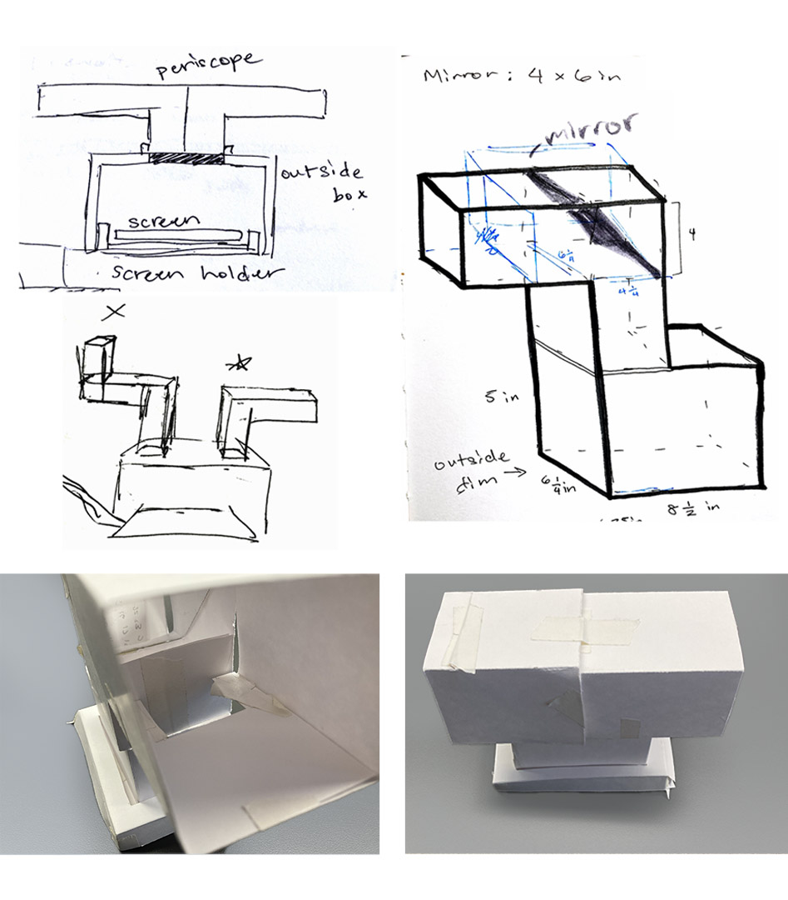

An interactive web and physical experience for users to create their own constellations, with a physical prototype to promote a sense of connection within a community.
Timeline:
One month - Fall 2021
Tools:
p5.js, Arduino
Background & Planning:
I went into this interested in using APIs with a musical element in the experience, and found that the aesthetics of space fit both of these paramaters.
I sketched a walk-through of the experience on Procreate, with 2 options for the main screen. The option with text on the bottom felt more open, so I went with that for the final.
During user testing with a few of my classmates, I discovered that it wasn't immediately clear how to make stars on the second screen. The beginning and end screens also felt a bit empty, and the conclusion of the experience didn't feel solid. Otherwise, the feedback was positive and users enjoyed making constellations and the sound effects.
My next steps were to: duplicate instructions on the second screen, make a physical controller, add background stars, and create an ending that's more satisfying.

Physical Components:
When thinking about how to create a fuller emotional arc that would relate to the “collaborative” emphasis on this night sky, I deliberated over ways to view the last screen differently. Projecting it onto the ceiling, or making a small telescope to view it through were options. In the end, I went with creating a periscope as it would have a similar feeling to looking through a telescope, embodying the real life feeling of stargazing.
I sketched and made a paper prototype, and the final version is laser cut on cardboard. The controller is using Arduino, connected to my laptop.